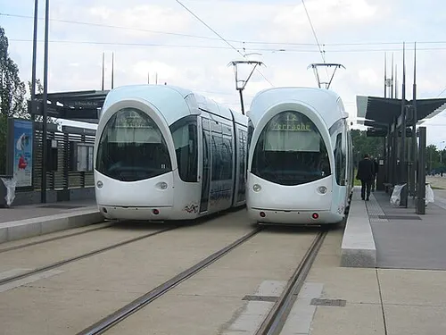

How Can We Make Public Transport More Comfortable for People?
Making public transport more comfortable for passengers is essential to encourage its use and improve the overall commuting experience.
Why People Vomit in Buses but Not in Trains
The phenomenon of people vomiting in buses but not as frequently in trains can be attributed to several factors, including the smell of fossil fuel burning:
Motion and Stability
Buses generally experience more abrupt movements compared to trains. They are subject to frequent stops, starts, and turns, which can cause a more pronounced sense of motion. This erratic movement can disrupt the inner ear's balance system, leading to motion sickness, which often manifests as nausea and vomiting. Trains, on the other hand, tend to move more smoothly and predictably, with fewer sudden changes in speed or direction, making them less likely to induce motion sickness.
Ventilation and Air Quality
Diesel Engines: Many buses, especially in urban and rural areas, are powered by diesel engines. Diesel combustion can produce a distinct, strong odor due to the emission of various hydrocarbons, nitrogen oxides, and particulate matter.
Buses can have poor ventilation, especially when overcrowded. The combination of limited fresh air and the presence of various odors, including the smell of burning fossil fuels, can make passengers feel nauseous. Trains, particularly modern ones, usually have better ventilation systems and more space, allowing for better air circulation and reducing the likelihood of nausea.
Seating and Space
Buses often have less legroom and more cramped seating arrangements compared to trains. This lack of space can make passengers feel more confined and uncomfortable, which can contribute to feelings of nausea. Trains typically offer more spacious seating and the ability to move around, which can help alleviate discomfort.
Strategies to Make Public Transport Comfortable
Enhance Ventilation and Air Quality
Use Air Conditioned Buses and Ventilation Systems: Ensure that buses have efficient air conditioning and ventilation systems to maintain a comfortable temperature and good air quality.
Regular Maintenance: Regularly check and maintain these systems to prevent malfunctions and ensure they operate effectively.
Provide Adequate Seating and Space
Comfortable Seating: Use ergonomically designed seats with sufficient padding and back support.
Spacious Layouts: Design the interior layout to maximize space, allowing passengers to move around easily and reducing feelings of confinement.
Priority Seating: Ensure priority seating is available for elderly, disabled, and pregnant passenger
Maintain Cleanliness and Hygiene
Regular Cleaning: Implement a strict cleaning schedule to keep the vehicles clean and free from trash, dirt, and unpleasant odors.
Sanitization Stations: Provide hand sanitizers and disinfectant wipes for passengers to use.
Waste Disposal: Install adequate waste disposal bins to encourage passengers to dispose of trash properly.
Improve Accessibility
Ramps and Lifts: Ensure buses and trains are equipped with ramps and lifts for wheelchair users and those with mobility issues.
Clear Signage: Provide clear and visible signage to help passengers navigate the transport system easily.
Assistance Services: Offer assistance services for passengers who need help boarding or alighting.
Enhance Safety and Security
Surveillance Systems: Install CCTV cameras to monitor activities and deter potential security threats.
Emergency Alarms: Equip vehicles with easily accessible emergency alarms and communication systems.
Well-lit Interiors: Ensure that the interiors are well-lit to enhance visibility and safety, especially during nighttime.
Provide Real-Time Information
Digital Displays: Install digital displays that show real-time information about routes, schedules, and delays.
Mobile Apps: Develop mobile apps that provide real-time updates, route planning, and service alerts.
Announcements: Make clear and timely announcements to keep passengers informed about their journey.
Offer Additional Amenities
Wi-Fi Access: Provide free Wi-Fi to allow passengers to stay connected during their commute.
Charging Ports: Install charging ports for electronic devices to ensure passengers can keep their devices powered.
Reading Materials: Offer magazines, newspapers, or digital content for passengers to enjoy during their trip.
Gather Passenger Feedback
Surveys and Feedback Forms: Regularly collect feedback from passengers to understand their needs and preferences.
Implement Changes: Use the feedback to make necessary improvements and adjustments to the services offered.
Trams: The Ideal Urban Transport for Smaller Cities
For smaller cities, metro railways are often not cost-effective. However, trams can be a viable alternative. Trams are spacious and, unlike buses, are less likely to cause motion sickness due to their smoother and more stable ride. Additionally, trams run on electricity, which means they do not release fossil fuel emissions, making them an eco-friendly solution that helps reduce pollution.
Lithium-ion batteries are a scarce resource. Instead of subsidizing EVs, we should focus on expanding tram networks as a more sustainable alternative. Trams are an efficient replacement for cars, buses, and trucks. Trams can reach speeds of up to 80 km/h at longer distances but typically average around 20-25 km/h in built-up areas due to frequent stops and traffic conditions. Trams offer an efficient, long-term solution to urban transportation without the need for large battery supplies.
